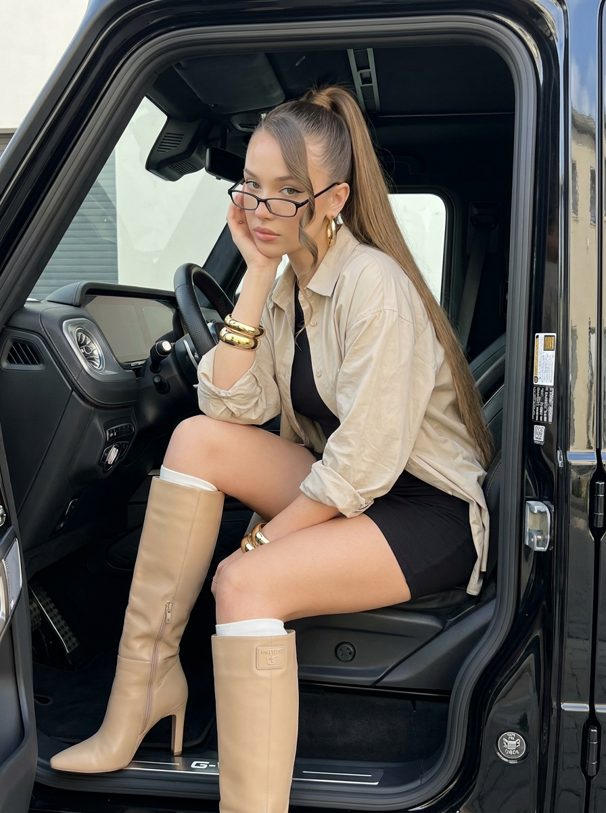
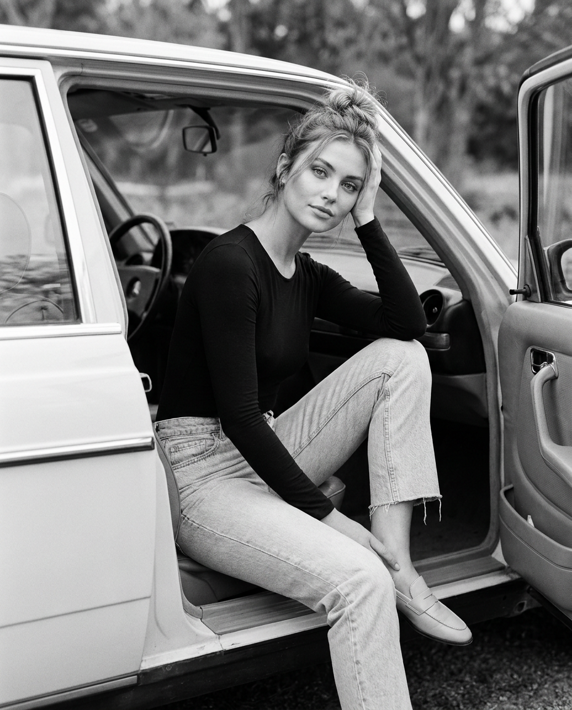
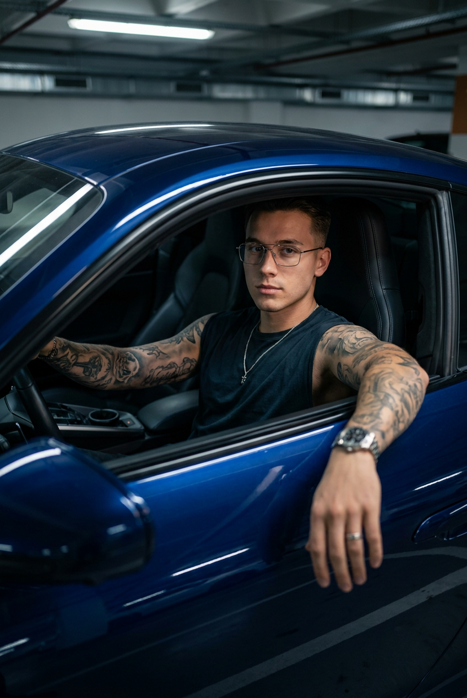
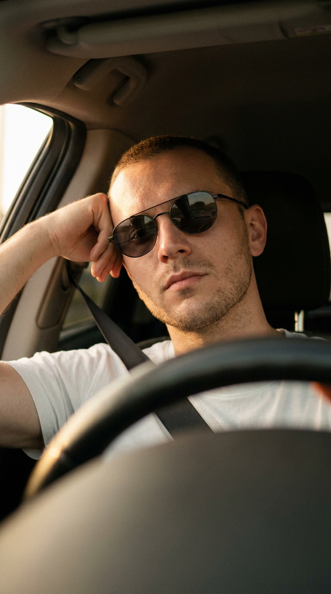
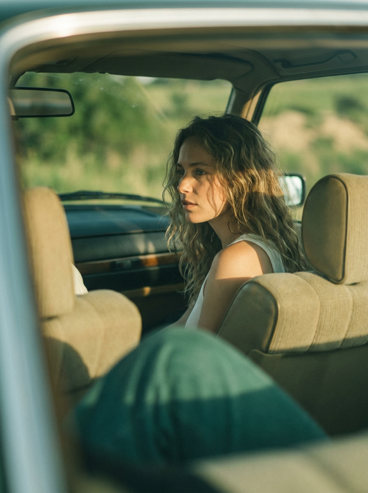
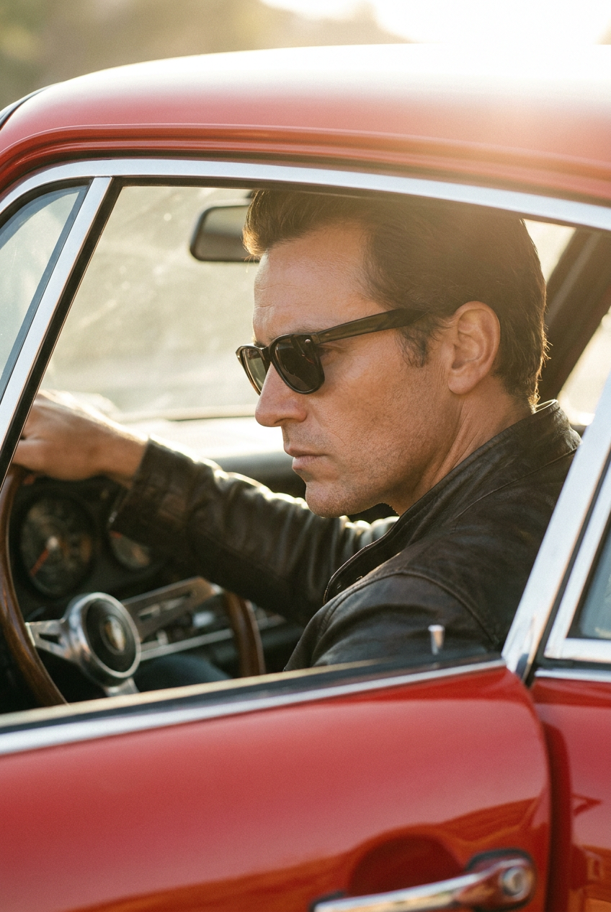
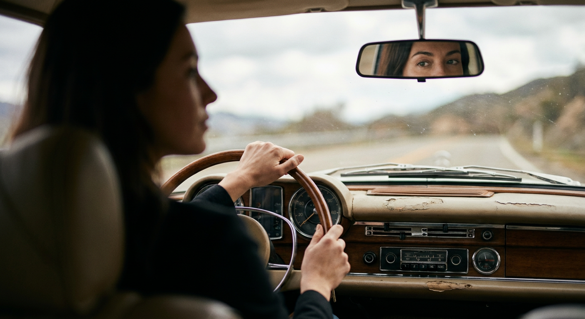
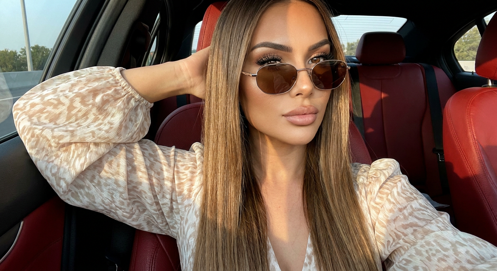
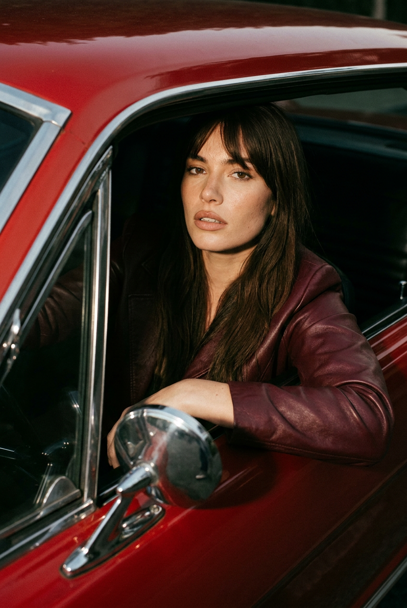
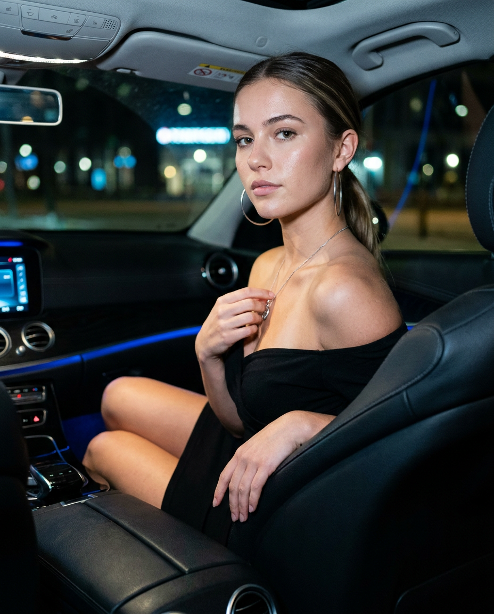

ИИ-фото в машине: 10 промптов для нейросети

Обычное селфи в салоне часто выглядит плоско: лицо теряется в тенях, руки становятся неестественными, а автомобиль превращается в случайный фон. Генерация помогает заранее задать позу, свет, одежду и характер кадра, чтобы получить выразительное ИИ-фото в машине.
В подборке — десять сценариев: от мягкого портрета в открытой двери и селфи на красной коже до съёмки через зеркало, ретро-салона, винтажного спорткара и ночного fashion-кадра. Промпты можно использовать как основу, меняя цвет автомобиля, одежду и настроение.
Как сгенерировать такое фото: пошагово
Нужен снимок анфас при ровном свете, лицо в кадре целиком, без тёмных очков и головных уборов. Разрешение от 1000 пикселей по короткой стороне. Чем чётче исходник, тем точнее модель повторит черты.
Выберите сценарий ниже и нажмите «Копировать» — текст уйдёт в буфер целиком, вместе с командой сохранения внешности. Эта команда стоит первой строкой и отвечает за то, чтобы на выходе было ваше лицо, а не случайное.
Кнопка «Сгенерировать» рядом с каждым промптом открывает модель в новой вкладке. Nano Banana Pro работает с референсом лица — в отличие от моделей, которые генерируют портрет с нуля и узнаваемость теряют.
Промпт — в поле ввода, портрет — через загрузку референса. Порядок значения не имеет, но без референса команда сохранения внешности работать не будет: модели нечего сохранять.
Для сторис и ленты берите 9:16, для превью и обложек — 4:3. Первый результат редко идеален: если поза или свет ушли не туда, поправьте соответствующую часть промпта и запустите заново. Обычно хватает двух-трёх итераций.
10 промптов для генерации
1. Элегантный портрет в G-классе
Строго сохранить внешность по загруженному референсу: черты лица, пропорции, мимику и текстуру кожи без изменений. Гиперреалистичный вертикальный портрет молодой женщины внутри чёрного Mercedes G-класса. Она сидит расслабленно и элегантно, опираясь на одну руку. На ней светло-бежевая рубашка оверсайз с длинными рукавами, собранными у запястий; рубашка слегка заправлена сбоку и небрежно распахнута поверх короткого чёрного облегающего платья. На ногах бежевые матовые ботфорты до колена на каблуке, с лёгким блеском и небольшим логотипом сверху; из голенищ видны белые носки. На запястьях крупные золотые браслеты, в ушах большие золотые кольца. Очень длинные волосы собраны в высокий аккуратный хвост, тонкая прядь на лбу образует мягкий локон у шеи. Естественный макияж, тонкие чёрные стрелки, деликатный хайлайтер. Очки в тонкой чёрной оправе слегка спущены на нос, взгляд уверенный и спокойный. Дорогая fashion-съёмка, натуральная кожа, точные пропорции, мягкий салонный свет.
2. Чёрно-белый кадр у двери

Строго сохранить внешность по загруженному референсу: черты лица, пропорции, мимику и текстуру кожи без изменений. Фотореалистичный чёрно-белый fashion-editorial портрет девушки в открытой водительской двери светлого автомобиля. Съёмка ведётся снаружи днём: дверь распахнута, в кадре видны руль, передняя панель, часть салона и рамка кузова. Девушка сидит боком на водительском месте, ноги согнуты внутри машины. Одной рукой она поддерживает голову у виска, другая свободно лежит на ноге. Взгляд направлен прямо в объектив, выражение спокойное, уверенное и немного мечтательное. На ней чёрный облегающий лонгслив или боди, светлые прямые джинсы с необработанным краем и светлые лоферы. Волосы собраны в небрежный пучок, у лица выпущены отдельные пряди. Макияж натуральный, глаза выразительные. На заднем плане деревья и природа, сильное боке. Свет мягкий, рассеянный, без жёстких теней. Настроение винтажное, дорогое, минималистичное и кинематографичное.
3. Мужской портрет в спорткаре

Строго сохранить внешность по загруженному референсу: черты лица, пропорции, мимику и текстуру кожи без изменений. Ультрареалистичный лайфстайл-портрет молодого мужчины внутри современного спорткара. Вертикальный средний план по пояс снят снаружи под небольшим верхним углом через открытое водительское окно; объектив направлен внутрь салона. Мужчина расслабленно сидит за рулём, плечи немного откинуты на спинку. Левая рука небрежно лежит на краю окна, правая находится возле центральной консоли. Голова слегка повернута к камере, выражение лица спокойное и внимательное. На нём облегающая тёмная майка без рукавов, открывающая татуировки на плечах и предплечьях, тонкие прямоугольные очки в металлической оправе, серебряная цепочка с небольшим кулоном, часы и простое кольцо. Татуировки занимают большую часть рук и контрастируют с минималистичной одеждой. В салоне тёмная кожа, спортивные сиденья и аккуратная центральная консоль. Естественный дневной свет, реалистичные отражения на стекле, дорогая автомобильная editorial-съёмка.
4. Автопортрет за рулём

Строго сохранить внешность по загруженному референсу: черты лица, пропорции, мимику и текстуру кожи без изменений. Фотореалистичный мужской автопортрет по референсу, вертикальный формат 9:16. Камера установлена на переднем месте низко, почти на уровне руля, и направлена немного снизу вверх. В нижней части изображения находится мягко размытый руль, создающий передний план. Мужчина сидит за рулём в белой футболке, через грудь проходит ремень безопасности. Левая рука согнута и поднята к голове, поза расслабленная, уверенная. Взгляд спокойный и серьёзный, направлен вперёд. На лице тёмные солнцезащитные очки в тонкой оправе, короткая аккуратная стрижка и лёгкая щетина. В салон слева проникает тёплый свет golden hour, он даёт мягкие блики на коже и линзах. Интерьер остаётся тёмным, с глубокими тенями. Палитра приглушённая: коричневые, бежевые и тёплые серо-коричневые тона. Дорогой мужской editorial car portrait, кинематографичный реализм.
5. Заднее сиденье на закате

Строго сохранить внешность по загруженному референсу: черты лица, пропорции, мимику и текстуру кожи без изменений. Фотореалистичный вертикальный кадр 3:4, снятый из задней части старого автомобиля. Камера расположена низко и немного левее, будто фотограф находится на переднем сиденье и снимает через промежуток между креслами. Передний план намеренно сильно размыт: снизу и слева крупные тёмно-бирюзовые или зелёные формы салона частично закрывают изображение, справа видна светлая размытая спинка переднего кресла или подголовник. В центре — женщина, сидящая расслабленно внутри машины. Её корпус развёрнут назад и немного влево, лицо повернуто влево, взгляд уходит через окно вдаль. Выражение задумчивое и спокойное. Длинные волнистые волосы слегка растрёпаны, отдельные пряди лежат на лбу и щеке. На ней тонкий белый топ без рукавов. Через окно падает тёплый золотой свет позднего дня, подсвечивая волосы и профиль. Небольшая глубина резкости, мягкое боке, аналоговая атмосфера, натуральная кожа и кинематографичная цветокоррекция.
6. Профиль в красном спорткаре

Строго сохранить внешность по загруженному референсу: черты лица, пропорции, мимику и текстуру кожи без изменений. Фотореалистичный editorial-портрет мужчины за рулём классического красного спортивного автомобиля. Съёмка крупным планом ведётся через боковое окно со стороны пассажира: в резком фокусе профиль лица, взгляд сосредоточенный и серьёзный, голова чуть наклонена вниз и вперёд. Мужчина одет в тёмную кожаную куртку, носит тёмные солнцезащитные очки, у него короткая аккуратная стрижка и лёгкая щетина. Одна рука лежит на руле, в кадре хорошо видны винтажный спортивный руль, часть приборной панели, красная дверная рамка и фрагмент кузова на переднем плане. Сверху и сбоку падает тёплый естественный солнечный свет, создавая золотой контровой ореол, блики на коже и насыщенной красной краске. В салоне мягкие тени и лёгкая световая дымка. Высокий контраст, cinematic warm tones, резкие детали лица и автомобиля, дорогая мужская автомобильная fashion-съёмка, ультрареалистичная фактура.
7. Взгляд через зеркало

Строго сохранить внешность по загруженному референсу: черты лица, пропорции, мимику и текстуру кожи без изменений. Фотореалистичный кадр из салона классического автомобиля, камера находится на заднем сиденье позади и немного слева от водителя. Ракурс проходит через левое плечо. В левом переднем плане почти вплотную к объективу видны сильно размытые голова и плечи женщины, создающие мягкий foreground blur и очень малую глубину резкости. В центре — её руки на руле: одна держит верхнюю часть, вторая расположена ниже, поза естественная. Передняя панель выполнена в винтажном стиле: деревянная отделка, бежево-коричневая палитра, механические кнопки, ретро-торпедо и слегка потёртые поверхности. В верхней центральной части находится зеркало заднего вида; именно в нём чётко видны глаза и верх лица женщины по референсу, без изменения черт. Взгляд спокойный, естественный. Основной фокус — зеркало и центральная часть приборной панели, фон и передний план заметно размыты. Тёплый мягкий дневной свет, реалистичные отражения и атмосфера старого автомобиля.
8. Селфи на красной коже

Строго сохранить внешность по загруженному референсу: черты лица, пропорции, мимику и текстуру кожи без изменений. Реалистичное селфи, снятое на iPhone в салоне автомобиля с красными кожаными сиденьями. Девушка находится на переднем пассажирском или водительском месте и держит одну руку за головой. На ней лёгкая светлая блузка с узором и объёмными рукавами. На лице солнцезащитные очки в тонкой металлической оправе с тёплыми линзами. Волосы длинные, прямые, гладкие и блестящие. Макияж аккуратный: ровный тон кожи, мягкий контуринг, выразительные глаза с длинными ресницами и объёмные губы. Боковой солнечный свет падает на лицо, формируя тёплые блики и естественные тени. Салон выглядит уютно, красная кожа хорошо читается в кадре. Высокая детализация, чёткие черты лица, резкость без лишнего размытия, натуральные пропорции. Эстетика снимка с Phase One IQ4 и объективом 80 мм f/2.8, диафрагма f/2.8–f/4. RAW, широкий динамический диапазон, смешанный баланс белого с сохранением тёплых и зеленоватых оттенков. Избегать плоского света, пересветов, провалов в тенях и потери фактуры.
9. Ретро-автомобиль и вспышка

Строго сохранить внешность по загруженному референсу: черты лица, пропорции, мимику и текстуру кожи без изменений. Фотореалистичный fashion-editorial портрет женщины с лицом по референсу за рулём красного американского автомобиля 1960-х годов, например Ford Mustang или Chevrolet Camaro. Она слегка высунулась из открытого водительского окна, левая рука спокойно лежит на боковом зеркале. Женщина смотрит прямо в камеру дерзко и уверенно, губы немного приоткрыты. Макияж естественный, с нюдовой помадой. Длинные прямые тёмно-каштановые волосы с чёлкой свободно падают на плечи. На ней приталенная куртка из гладкой бордово-вишнёвой кожи. Использовать один жёсткий направленный источник — накамерную вспышку или портативный моноблок с рефлектором — спереди слева под углом 30 градусов. Контраст света 1:8, глубокие резкие тени на лице и в салоне. Интерьер автомобиля полностью погружён в чёрную тень. На красном кузове и хромированных деталях яркие глянцевые блики. Жёсткий fashion-свет, насыщенный контраст, резкая фактура кожи и металла.
10. Ночной портрет на пассажирском

Строго сохранить внешность по загруженному референсу: черты лица, пропорции, мимику и текстуру кожи без изменений. Гиперреалистичный редакционный портрет молодой женщины на пассажирском сиденье роскошного автомобиля ночью. Она сидит боком, слегка разворачивая корпус к камере. Одна рука расслабленно лежит на подлокотнике, вторая касается подвески на шее. Взгляд прямо в объектив, выражение спокойное и уверенное. Длинные прямые волосы собраны в низкий хвост. Макияж подчёркивает глаза: чёрные стрелки и объёмные ресницы. На женщине чёрное облегающее платье с открытыми плечами и крупные серебряные серьги-кольца. В салоне чёрные кожаные сиденья, включена холодная синяя подсветка. За окнами — размытые огни ночного города. Использовать жёсткую фронтальную вспышку: она формирует контрастные тени на лице, подчёркивает текстуру кожи, ткани и украшений. Малая глубина резкости, главный фокус на глазах, лице и подвеске. Fashion editorial, night car portrait, глубокие чёрные тона, холодные городские блики, натуральные пропорции.
Что важно учесть в этом стиле
Автомобиль в таком кадре должен быть не декорацией, а частью композиции. Укажите, где находится камера: снаружи у окна, на заднем сиденье, рядом с рулём или со стороны пассажира. Так нейросети проще выстроить перспективу и не перепутать водительское место с пассажирским.
Свет лучше описывать конкретно: направление, жёсткость, время суток и цвет. Для golden hour подойдут тёплые блики и мягкие тени, для ночного кадра — холодная подсветка салона и жёсткая вспышка. Если нужен узнаваемый человек, добавляйте референс лица, но проверяйте результат: очки, руки и сложный профиль часто требуют нескольких генераций.
Идеи для вариаций
- Замените G-класс на белый кабриолет, электрокар или старый универсал.
- Перенесите съёмку из дневного города на пустую парковку, лесную дорогу или заправку ночью.
- Поменяйте golden hour на пасмурный рассеянный свет, неоновую подсветку или свет фар.
- Сделайте серию в одной стилистике: чёрно-белый кадр, красный кожаный салон и винтажная цветокоррекция.
- Добавьте отражения в боковом зеркале, капли дождя на стекле или лёгкий motion blur за окнами.
Как собрать свой промпт
Начните с формата и точки съёмки: вертикальный 9:16, крупный план через боковое окно или кадр с заднего сиденья. Затем задайте героя, позу, направление взгляда и одежду. Отдельным предложением опишите интерьер: материал сидений, цвет панели, руль, зеркало и детали кузова.
В финале добавьте свет, объектив и настроение. Вместо «красивый свет» напишите «жёсткая вспышка спереди слева под углом 30 градусов» или «мягкий солнечный свет через левое окно». Для стабильного результата ограничьте сцену 1–2 главными акцентами и после первой генерации уточняйте только проблемные детали.
Ошибки, из-за которых кадр не получается
- Слишком много объектов. Несколько машин, зеркал и источников света запутают перспективу и детали салона.
- Нет точки съёмки. Без указания положения камеры нейросеть может случайно поменять сторону руля или посадить героя не на то место.
- Противоречивый свет. Не смешивайте жёсткую вспышку и полностью рассеянное освещение в одном описании.
- Размытые требования к лицу. Для референса уточняйте сходство и просите не менять ключевые черты, но проверяйте глаза, пальцы и линию подбородка.
- Перегруженный гардероб. Длинный список логотипов, украшений и фактур повышает риск артефактов.
Частые вопросы
Как сделать такое ИИ-фото бесплатно?
Можно попробовать Kandinsky и Шедеврум: у них есть бесплатная генерация, но сходство с референсом, позы и сложные автомобильные сцены могут быть ограничены. Krea AI и Arena.ai удобны для быстрых экспериментов и сравнения результатов, однако доступные функции, число попыток и работа с референсами зависят от текущих условий сервиса. Для точного лица иногда понадобится несколько перегенераций.
Как сохранить сходство лица с референсом?
Загрузите качественный портрет без сильных фильтров и отдельно опишите ракурс, выражение и положение головы. Не перегружайте промпт деталями лица: достаточно указать естественные черты, направление взгляда и запрет на изменение ключевых особенностей. При сложном профиле или очках выбирайте референс с похожим освещением.
Как убрать лишние пальцы и кривой руль?
Уточните количество видимых рук, положение каждой кисти и контакт с рулём. Полезно добавить негативные требования: лишние пальцы, деформированные кисти, двойной руль, асимметричные элементы панели. Если проблема сохраняется, сначала сгенерируйте кадр без аксессуаров, а затем добавляйте их на следующем этапе.
Какой формат выбрать для соцсетей?
Для сторис и вертикальных публикаций подойдут 9:16 или 4:5. Формат 3:4 удобен для портрета через салон, потому что оставляет место для руля и деталей интерьера. Квадратный кадр лучше использовать для крупного селфи, где автомобиль остаётся второстепенным фоном.